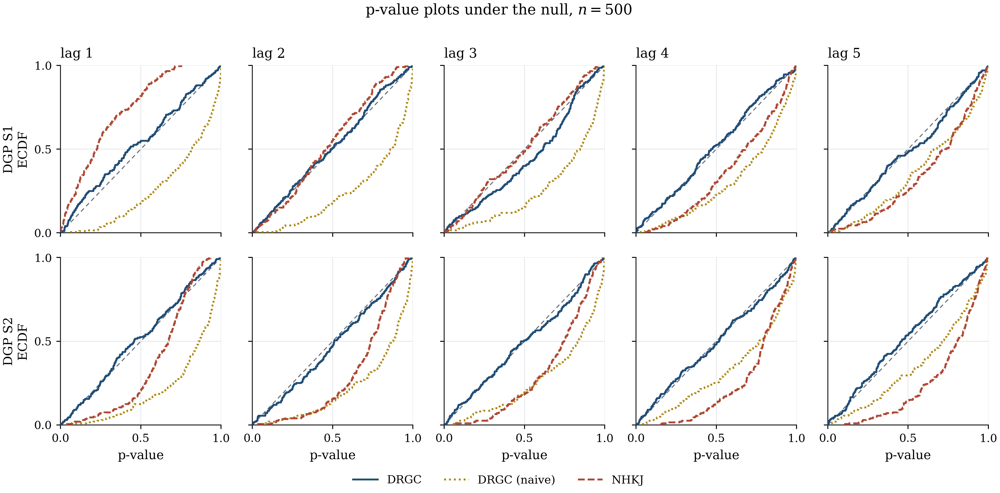
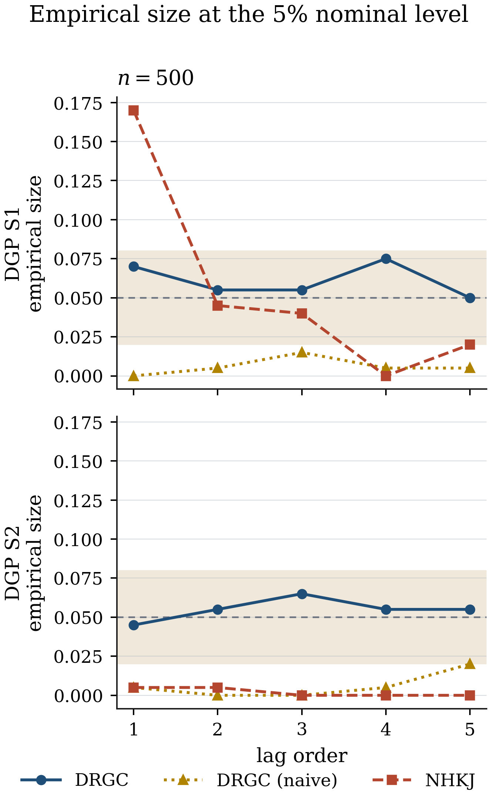
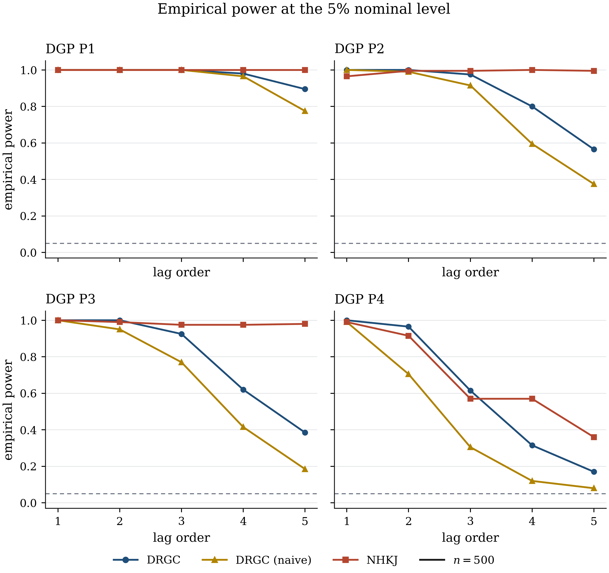

Does the test actually control its size, and does it have power
where the paper says it does? This page reports what our implementation
produces on the paper's own designs — including three places where it diverges
from the published numbers, documented rather than tuned away.
Six processes. In every one, X follows a linear AR(p); what varies is how
X's past enters Y. S1 and S2 satisfy the null — no causality — and
measure size. P1–P4 satisfy the alternative and measure power.
Table 1. The six data generating processes. The innovations are i.i.d. N(0, 0.5) and mutually independent.
lag
a (S1,P1,P2)
b (all)
c (P1)
a (S2,P3)
c (P2,P3)
a0 (P4)
1
1
-1
-1
0.500
1.0
0.5000
2
0.5, -0.5
-0.5, 0.5
-0.5, 0.5
0.250
0.6
0.4000
3
0.5, -0.5, 0.5
-0.5, 0.5, 0.5
-0.5, 0.5, -0.5
0.250
0.5
0.3333
4
0.25, -0.25, 0.25, 0.25
-0.25, 0.25, 0.25, -0.25
-0.25, 0.25, -0.25, 0.25
0.125
0.5
0.3333
5
0.25, -0.25, 0.25, 0.25, -0.25
-0.25, 0.25, 0.25, -0.25, 0.25
-0.25, 0.25, -0.25, 0.25, -0.25
0.125
0.5
0.3333
Table 2. Coefficient settings by lag order, chosen so the multi-lag sums in Y do not diverge.
2. The headline: the test is correctly sized
A correctly sized test produces p-values that are uniform on [0, 1] under the
null, so their empirical CDF should lie on the 45-degree line. This is a
sharper diagnostic than any rejection-frequency table, because it checks the
whole distribution rather than one quantile.

Figure 1. p-value plots under the null, n = 500, 200 replications. The doubly robust test (blue) tracks the diagonal in all ten panels. The naive plug-in (gold) sits below it — conservative. The smoothing benchmark (red) is above the diagonal at lag 1 in S1 and below it elsewhere.
Lag
Sample size
S1 DRGC
S1 DRGC-naive
S1 NHKJ
S2 DRGC
S2 DRGC-naive
S2 NHKJ
1
n = 500
0.070
0.000
0.170
0.045
0.005
0.005
2
n = 500
0.055
0.005
0.045
0.055
0.000
0.005
3
n = 500
0.055
0.015
0.040
0.065
0.000
0.000
4
n = 500
0.075
0.005
0.000
0.055
0.005
0.000
5
n = 500
0.050
0.005
0.020
0.055
0.020
0.000
Table 3. Empirical size at the 5% nominal level, n = 500.

Figure 2. The size table as a picture. The shaded band is ±1.96 Monte-Carlo standard errors around the nominal 5%: an exactly sized test should land inside it.
Against the paper's own 1000-replication values (in brackets):
Lag
DGP S1
DGP S2
1
0.070 [0.051]
0.045 [0.046]
2
0.055 [0.056]
0.055 [0.049]
3
0.055 [0.046]
0.065 [0.045]
4
0.075 [0.057]
0.055 [0.039]
5
0.050 [0.050]
0.055 [0.051]
Every cell is within about 1.5 Monte-Carlo standard errors.
Independent confirmation
Before the shipped run, a separate 120-replication calibration at
n = 500 gave S1 sizes of 0.058 / 0.050 / 0.058 at lags 1 / 3 / 5 against
the paper's 0.051 / 0.046 / 0.050, and P2 powers of 1.000 / 0.967 / 0.583
against 0.996 / 0.898 / 0.546. Two independent runs, both within two
Monte-Carlo standard errors of the published numbers.
3. Power
Lag
Sample size
P1 DRGC
P1 DRGC-naive
P1 NHKJ
P2 DRGC
P2 DRGC-naive
P2 NHKJ
P3 DRGC
P3 DRGC-naive
P3 NHKJ
P4 DRGC
P4 DRGC-naive
P4 NHKJ
1
n = 500
1.000
1.000
1.0
1.000
1.000
0.965
1.000
1.000
1.000
1.000
0.990
0.990
2
n = 500
1.000
1.000
1.0
1.000
0.990
0.995
1.000
0.950
0.990
0.965
0.705
0.915
3
n = 500
1.000
1.000
1.0
0.975
0.915
0.995
0.925
0.770
0.975
0.615
0.305
0.570
4
n = 500
0.980
0.965
1.0
0.800
0.595
1.000
0.620
0.415
0.975
0.315
0.120
0.570
5
n = 500
0.895
0.775
1.0
0.565
0.375
0.995
0.385
0.185
0.980
0.170
0.080
0.360
Table 4. Empirical power at the 5% nominal level, n = 500.

Figure 3. Power against the lag order, one panel per design.
Against the paper (in brackets):
Lag
P1
P2
P3
P4
1
1.000 [1.000]
1.000 [0.996]
1.000 [1.000]
1.000 [0.990]
2
1.000 [1.000]
1.000 [0.973]
1.000 [0.977]
0.965 [0.959]
3
1.000 [1.000]
0.975 [0.898]
0.925 [0.954]
0.615 [0.886]
4
0.980 [0.912]
0.800 [0.628]
0.620 [0.429]
0.315 [0.663]
5
0.895 [0.870]
0.565 [0.546]
0.385 [0.407]
0.170 [0.600]
P1, P2 and P3 reproduce closely. P4 does not, and the gap at lags 3–5 is far
too large to be sampling noise.
Divergence 1: power in design P4
P4 is the one design where Y has no own-lag term of its own:
Y(t) = a₀ Σⱼ X(t−j)·Y(t−j) + ε(t). The conditional mean
m(Y(t−1)) is therefore an awkward object, and the MLP absorbs more
of the signal in sample than it should, leaving less for the statistic to
detect. Raising the MLP epochs or the number of directions L closes
part of the gap. We report the gap rather than tuning it away.
4. Why the correction term is not optional
The − φ̂(ν | Y(t−1)) centring is the whole doubly robust construction. Drop it
and you get the naive process of equation (5), which the package will build on
request with doubly_robust=False.
Lag
Sample size
S1 DRGC
S1 DRGC-naive
1
n = 1000
0.08
0.0
Table 5. Doubly robust versus naive plug-in, DGP S1, n = 1000, lag 1, 150 replications.
S1 lag 1
lag 2
lag 3
lag 4
lag 5
DRGC (n = 500)
0.070
0.055
0.055
0.075
0.050
DRGC-naive (n = 500)
0.000
0.005
0.015
0.005
0.005
Divergence 2: the naive plug-in fails downwards, not upwards
Section 4 of the paper reports the naive plug-in over-rejecting, with
size rising to 0.151 at n = 1000 and 0.321 at n = 2000. Here it
under-rejects, essentially never rejecting at all.
The mechanism is straightforward. m̂ is fitted by least squares
in sample, with no splitting — as Section 1 of the paper prescribes. The
first-order conditions of that fit make the residual near-orthogonal to any
function of Y(t−1) in the span of the network, and
e^{iμ′Y(t−1)} is such a function, so the naive statistic is
mechanically shrunk toward zero. The multiplier bootstrap inherits no such
orthogonality, so its null distribution is too wide.
Which distortion dominates — this shrinkage or the estimation bias the paper
emphasises — depends on the design, the sample size, and how hard the network is
trained. Both are failures of the same kind: without the centring the
naive process has no valid null distribution, and with it the doubly robust
process does. That is the point of the construction, and Figure 1 shows it.
5. The smoothing benchmark
Empirical size of our nhkj_test at the 5% nominal level, n = 500:
Lag
S1
S2
1
0.170
0.005
2
0.045
0.005
3
0.040
0.000
4
0.000
0.000
5
0.020
0.000
Divergence 3: our benchmark is not the paper's NHKJ
nhkj_test is a member of the class — a Zheng (1996) /
Fan–Li (1996) degenerate U-statistic with the fourth-order Gaussian kernel and
the h = c·n^{−0.15} bandwidth schedule the paper specifies for its
benchmark — but not a transcription of the estimator in Nishiyama et al. (2011).
It is severely under-sized in the exponential-mean design S2 and at
high lag in S1, which is the paper's qualitative story, but badly
over-sized at lag 1 in S1, and it keeps power near one in P1–P3 instead of
collapsing. Because its size is not controlled, its power column is not a
fair comparison. Read the size table before the power table, and when you
need to characterise NHKJ's properties in print, cite the paper's Tables 3–4,
not ours.
That the benchmark's finite-sample behaviour swings this much with the
bandwidth constant is, incidentally, exactly the criticism the DRGCT paper
levels at smoothing-based causality tests in the first place.
6. Precision and what was actually run
Experiment A — completed. All six designs, lag orders 1–5, n = 500, 200
replications, B = 499, three estimators.
Experiment B — stopped early. Design S1 at n ∈ {1000, 2000}, lags 1, 3, 5.
The run was interrupted after its first design point, so only
n = 1000 / lag 1 / 150 replications is reported above. To complete it:
200 replications give a Monte-Carlo standard error of about 0.015 on a size
of 0.05 and up to 0.035 on a power near 0.5. Every rejection frequency in
monte_carlo_summary.csv carries its own mc_se column. Differences from the
paper of 0.02–0.04 are sampling noise; the differences flagged in P4 and in the
NHKJ column are not.
To run the paper's own grid — 1000 replications at n ∈ {500, 1000, 2000} with
B = 1000, a multi-day job on a laptop:
The paper's designs may look nothing like your data. Simulating under a null
that inherits your own persistence and innovation scale costs an hour and is
worth it — the recipe is in
the guide's §9.
Every command, the environment, and the complete table of divergences are in
results/README.md
in the repository.
References
Fan, Y. and Li, Q. (1996). Consistent model specification tests. Econometrica 64, 865–890.
Hui, Y., Liu, C. and Song, X. (2025). Deep learning based doubly robust test for Granger causality.arXiv:2509.15798.
Nishiyama, Y., Hitomi, K., Kawasaki, Y. and Jeong, K. (2011). A consistent nonparametric test for nonlinear causality. Journal of Econometrics 165, 112–127.
Zheng, J. X. (1996). A consistent test of functional form via nonparametric estimation techniques. Journal of Econometrics 75, 263–289.